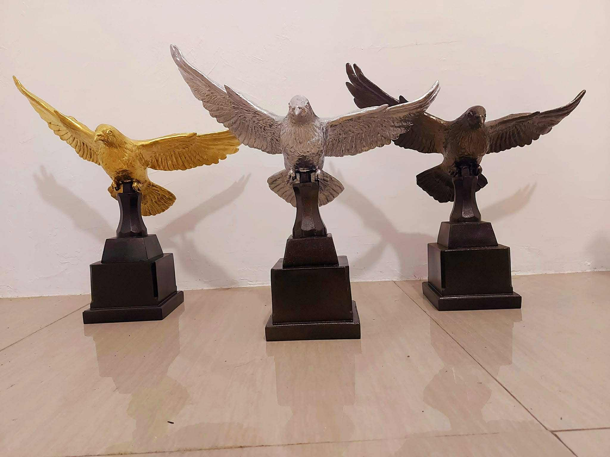
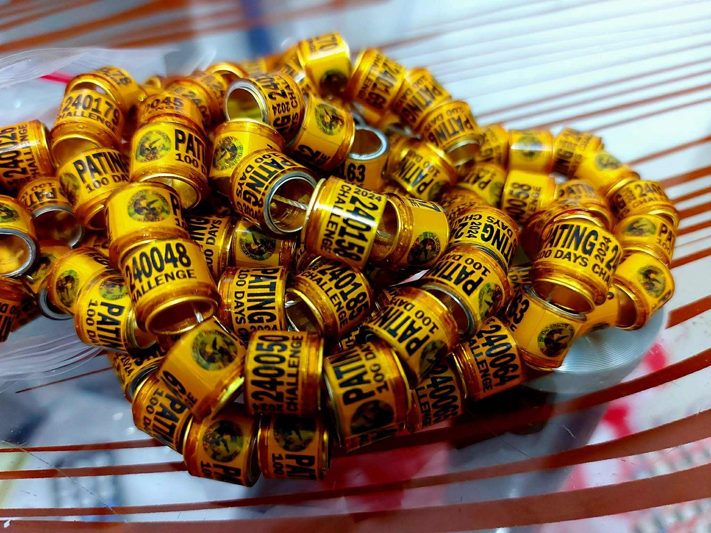

We are making Quality
Products Nationwide
Hand-made Trophies
Creating quality trophies involves a commitment to craftsmanship, attention to detail, and the use of premium materials. Each trophy is designed to not only celebrate achievement but also to reflect the prestige and significance of the occasion. From classic metal cups and crystal awards to custom acrylic and wood designs, every piece is carefully produced to ensure durability, elegance, and a lasting impression. Whether for sports, corporate recognition, academic success, or special events, quality trophies serve as timeless symbols of accomplishment and pride.
Pigeon Racing Rings
Designing and producing a high-quality pigeon racing ring requires precision engineering, durable materials, and a deep understanding of the sport. These rings must be lightweight and comfortable for the bird, while also being strong enough to withstand daily wear and outdoor conditions. Each ring is typically engraved or printed with unique identification numbers and codes that are essential for tracking and verifying race results. Whether made from aluminum, plastic, or composite materials, a well-crafted pigeon racing ring ensures both the safety of the bird and the integrity of the competition.